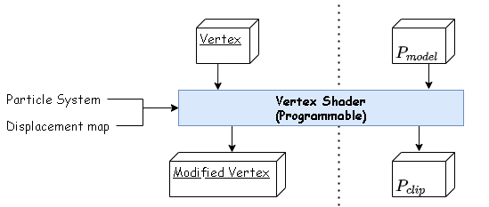
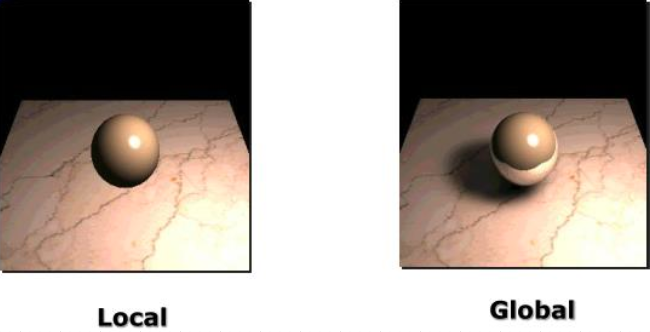
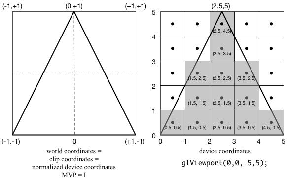

Graphics API
Every graphics program needs to be able to use two related APIs: a graphics API for visual output and a user-interface API to get input from the user. In Java, the graphics and user-interface toolkits are integrated and fully supported as part of the language. In C++, graphics API like DirectX and OpenGL are used to draw shapes, whereas the user-interface API is an independent entity that vary from system to system. In this approach, it is problematic to write portable code, therefore it's common to adopt a third layer to encapsulate the system specific user-interface code.
Graphics Pipeline
The graphics pipeline can be roughly divided into three part:
- Vertex Processing
- Primitive Processing
- Fragment Processing
The inputs of the pipeline include
- A camera with position, orientation, focal length etc. specified
- Objects which points, lines, polygons, curves with their geometry and material properties etc.
- Light sources with direction, position, color, intensity etc. specified.
- Textures and maps that describe the color, normal, metalness etc. of the surfaces.
and the output is the per-prxel color values that pass to the framebuffer.
Vertex Processing
Vertex Assembly
Vertex assembly pulling vertex attributes from different buffers.
Vertex Shader
Vertex shader handles the processing of individual vertices. Formally, it called the Transform and Lighting stage, means that its mainly duty is to applys the transformation from model to clip coordinates and to performs additional per-vertex lighting-related computation.

Transformation
\(P_{clip} = (M_{model-view-projection})(P_{model}) = (M_{projection})(M_{view})(M_{model})(P_{model})\)

Lighting
- Local illumination: The reflected light that dependent only on the surface and the direct light sources
- Global illumination: The reflected light that depend on the surface, direct light sources, and light reflected by other surfaces in the environment towards.

Tessellation
Tessellation is the Vertex Processing stage in the OpenGL rendering pipeline where patches of vertex data are subdivided into smaller Primitives.
Geometry Shader
Geometry Shader governs the processing of Primitives. It takes a single Primitive as input and may output zero or more primitives.
Vertex Post-Processing
Transform Feedback
Transform Feedback is the process of capturing primitives generated by the previous step, recording data from those primitives into Buffer Objects.
Clipping, Perspective Division, and Viewport Transform
- Clipping
- 3D clipping: eliminating all polygons that farther than the far plane or nearer than the near plane.
- 2D clipping: eliminating the polygons and lines outside the image window.
- Other user-defined clipping
- Perspective Division \[\begin{pmatrix}x_{ndc}\\y_{ndc}\\z_{ndc}\end{pmatrix} = \begin{pmatrix}{\frac {x_{c}}{w_{c}}}\\{\frac {y_{c}}{w_{c}}}\\{\frac {z_{c}}{w_{c}}}\end{pmatrix}\] where ndc shorts for normalized device coordinates.
- Viewport Transform
Given \(x, y, width, height, nearVal, farVal\), the window-space coordinates become \[\begin{pmatrix}x_{w}\\y_{w}\\z_{w}\end{pmatrix}=\begin{pmatrix}{\begin{aligned}{\frac {width}{2}}x_{ndc}&+x+{\frac {width}{2}}\\{\frac {height}{2}}y_{ndc}&+y+{\frac {height}{2}}\\{\frac{farVal-nearVal}{2}}z_{ndc}&+{\frac{farVal+nearVal}{2}}\end{aligned}}\end{pmatrix}\]
Primitive assembly and Face Culling
Primitive assembly is the step to convert a vertex stream into a sequence of base primitives which refers to the interpretation scheme to determine what a stream of vertices represents. For example, a line list of 12 vertices needs to generate 11 line base primitives. In OpenGL, the format of a primitive could be a point, line, triangle or quad.
Face Culling is the process to discard triangles based on their apparent facing which is defined by the winding order of the three points.
Rasterization
Rasterization is the step to determine which fragments(pixels) a primitive overlaps

Fragment Shader
Fragment Shader is the step to assign final color to each fragment (texturing, shading). It may also involve per-fragment lighting.
Lighting vs Shading:
- Lighting: interaction between light and surface. if per-vertex lighting: do lighting calculations here
- Shading: interpolating vertex attributes to all fragments assign final color to each fragment
Per-fragment Processing
Per-sample processing operations may take place after or before (under some conditions) the Fragment Shader has executed, in the following order:
- Pixel ownership test
The Default Framebuffer (this test only affects rendering to the default framebuffer) is owned by a resource external to OpenGL, so it is possible that particular pixels of the default framebuffer are not owned by OpenGL caused by being partially obscured by another window, such pixels will fail the ownership test and be discarded. - Scissor Test
Determine whether given fragment falls outside a certen rectangular region; If so, it will be discarded. - Stencil Test
Determine whether to discard given fragment based on a bitwise operation between the fragment's stencil value and the stencil value stored in the current Stencil Buffer at that fragment's sample position. It is used for used for various rendering effects like masking and shadows. - Depth test
Compare depth value of given fragment and depth value of the framebuffer. - Blending
Takes the fragment color outputs and combines them with the colors in the color buffers that these outputs map to. - Dithering
Under the fact that there are only finite number of colors, dithering is to map color value to one of the nearest renderable colors. - Logic operation
A operation applied between the Fragment's color values and correspondings color values in the Framebuffer. - Write mask
Determine whether allow or prevent color, depth, or stencil components from being written to the current framebuffer.
Numerical Issues
It was very difficult to handle the edges cases and exceptions in a robust and portable manner until the establishment of IEEE floating-point standard in 1985. Consider about the equation: \[a = \frac{1}{\frac{1}{b} + \frac{1}{c}}\]
In the old days when divide-by-zero resulted in a crash, two if statements would be required to check for small or zero values of b or c. Instead, with IEEE floating-point, if b or c is 0, it will assign a to be 0 as desired which avoids special checks.
Special Values
- Positive infinity \(\infty\): a number that larger than all other valid numbers.
- Negative infinity \(-\infty\): a number that smaller than all other valid numbers.
- Not a number NaN: a symbolic entity encoded in floating-point format with two types and two arithmetic rules:
- Signalling NaN (NANS): a symbol which will signal an invalid operation exception
- Quiet NaN (NANQ): a symbol which will propagate the symbol without signalling an exception
- Any arithmetic expression that includes
NaNresults inNaN. - Any Boolean expression involving
NaNisfalse.
| Special Value | Float Representation | Double Representation |
|---|---|---|
| Positive infinity | 7F800000 |
7FF0000000000000 |
| Negative infinity | FF800000 |
FFF0000000000000 |
| Signalling NaN | Any bit pattern between 7F800001 and 7FBFFFFFor between FF800001 and FFBFFFFF |
Any bit pattern between 7FF0000000000001 and 7FF7FFFFFFFFFFFFor between FFF0000000000001 and FFF7FFFFFFFFFFFF |
| Quite NaN | Any bit pattern between 7FC00000 and 7FFFFFFFor between FFC00000 and FFFFFFFF |
Any bit pattern between 7FF8000000000000 and 7FFFFFFFFFFFFFFFor between FFF8000000000000 and FFFFFFFFFFFFFFFF |
Evaluation of Expression
Suppose a is a real number, then
| Expression | Evaluation | Expression | Evaluation |
|---|---|---|---|
| \(a/\infty\) | \(+0\) | \(-a/\infty\) | \(-0\) |
| \(a/(-\infty)\) | \(-0\) | \(-a/(-\infty)\) | \(+0\) |
| \(\infty+\infty\) | \(\infty\) | \(\infty-\infty\) | NaN |
| \(\infty\times\infty\) | \(\infty\) | \(\infty/\infty\) | NaN |
| \(\infty/a\) | \(\infty\) | \(\infty/0\) | \(/infty\) |
| \(a/(+0)\) | \(\infty\) | \(0/0\) | NaN |
Improvement Directions
- Performance
- Triangles per second
- Pixels fragments per second
- Features
- Hidden-surface elimination
- Image mapping
- Antialiasing
- Quality
- Numeric representation
- Image filters
Tips
- Pay more attention to memory access patterns than to operation counts. Compute intermediate results as needed on the fly rather than storing them.
- Compile in optimized mode.
- Use whatever profiling tools exist to find critical bottlenecks. If profiling reveals bottlenecks in numeric computations, examine the assembly code generated by the compiler for missed efficiencies.
- Use doubles for geometric computing and floats for color computing and storing.